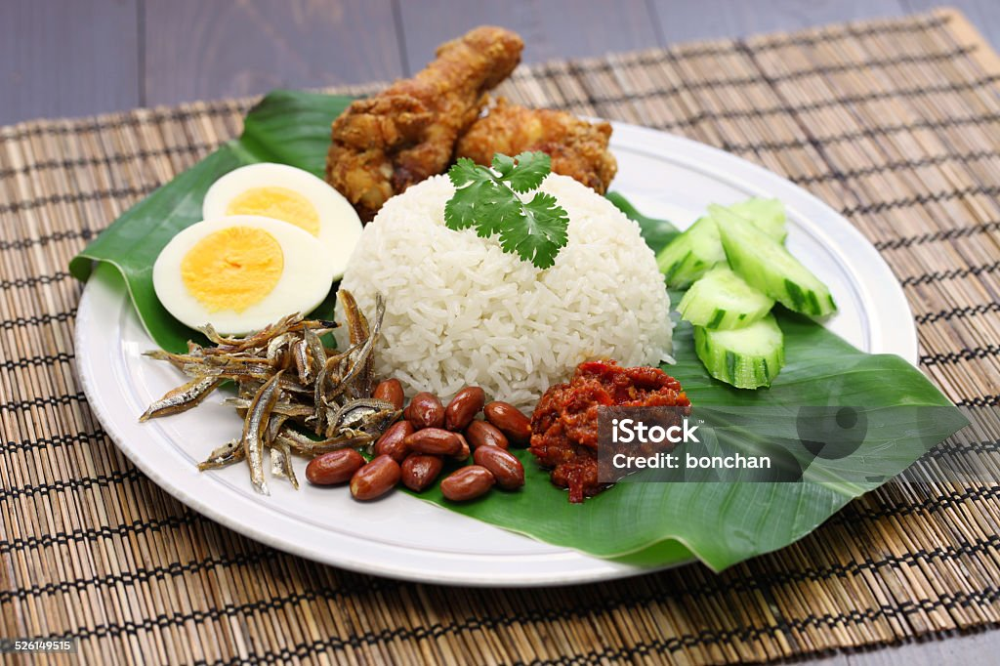

Description
This iconic Malaysian dish (Tanah Tumpahnya Darahku!!!) is all about that fragrant coconut milk rice,
topped with crispy anchovies, spicy sambal, hard-boiled eggs, roasted peanuts, and fresh cucumber.
It’s highkey bussing and you guys should give it a try!
Ingredients:
- Coconut Rice
- Sambal with one of its key ingredient is belacan (Malaysian prawn paste)
- Dried Anchovies
- Peanuts
- Hard-boiled eggs
- Cucumber
- Fish (or chicken) depends on your appetite
Steps:
- Prepare the coconut rice first by rinsing the rice until the water runs clear.
Cook it with coconut milk, water, salt and knotted pandan leaves after
- Prepare the sambal paste by blending or pounding shallots, garlic, dried chillies and belacan into a smooth paste
- Fry anchovies. Rinse, drain it first and then deep fry dried the anchovies until golden and crispy
- Prepare sambal ikan bilis by frying the sambal paste until fragrant, add onions and achovies, then add tamarind juice,
salt and sugar to your liking. Simmer until thickened
- Assemble and serve. Arrange everything on a banana-leaf-layered plate and enjoy the dish!
Homepage
Return to the top